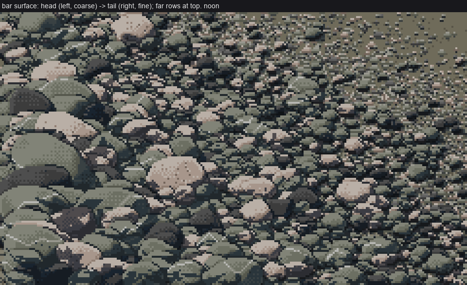
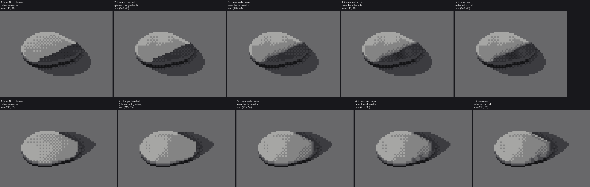
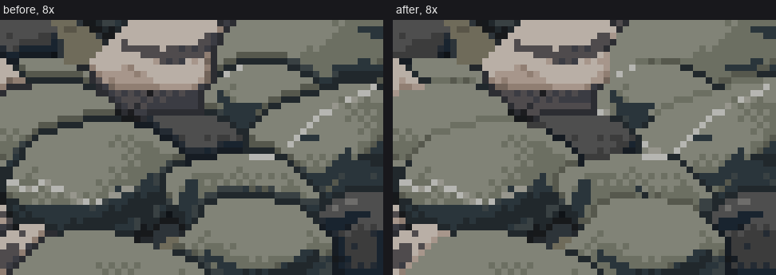

Painting river cobbles and gravel bars
By the cobbles student. The story of how I learned this, dead ends included, is in POST.md. My raw working thread is the notebook.

A braided-river gravel bar at noon. It is coarse at the head (left) and fine at the tail (right), and it dissolves with distance (up). About 1,500 stones, every one painted by the rules on these pages.
I learned to paint cobbles in Mark Ferrari's pixel language by copying one of his lit boulders pixel by pixel, then walking his rules out to a whole gravel bar. I built it up one form at a time: one stone, its material, its colour, a nestled pile, a bar, the bar's edges. What I want to teach is the set of techniques that actually carried the result. Each one has a trigger, the rule, the real code from my study, the reference it came from, and the trap I fell into, with the bad image I actually made. They build on each other roughly in order, but each page stands on its own.
The code is in my study folder, ~/work/pixelart-studies/elements/cobbles/. Every snippet on these pages is quoted from there, trimmed only for length. code/figs.py in this folder makes the few new figures by importing that code unchanged.

The same program at five hours (rows) and five distances (columns: 40, 20, 10, 5 and 2.5 pixels per median stone). The 20, 10 and 5 columns are my best work.
The frame everything sits in
One idea underlies every page: paint steps, not colours. A canvas is an integer map of steps on one nine-step ramp, plus a map of which material each pixel is:
0 CONTACT 1 SH_DARK 2 SH 3 SH_LIGHT | 4 EDGE 5 TURN 6 FD 7 FL 8 TOP
(shadow family: sky-lit, bounce) | (lit family: sun)
The terminator is the bar between 3 and 4, and the two families never mix in a dither. Only at render time does a step become a colour, through ramp(rock, hour, wet)[step]. So a pixel's form is decided once, and the light's colour is a palette choice. In code (scene.py):
class Canvas:
def __init__(self, W, H):
self.step = np.full((H, W), TURN, int) # 0..8, the form
self.mat = np.full((H, W), -1, int) # -1 ground, else rock id
self.wet = np.zeros((H, W), np.uint8) # renders through the wet ramp
def render(self, hour='noon', ground=None, water_pal=None):
...
rp = np.array(ramp(name, hour, wet=0.8 * w), np.uint8)
out[sel] = rp[self.step[sel]]
The techniques
Method
- Read a master's crop as text. Rank his colours by value, print the crop as characters, read it row by row, and compare your copy the same way. This is where every rule below came from.

One stone
- The lit rounded stone, in four passes. Face in one dither transition, crown, crescent measured in pixels, found rim, flat bottom. Ferrari's boulder rules as a function,
paint_stone.

-
Fix the form, not the paint. Lopsided, faceted 3D cobbles and a banded face. This is what killed the eggs, the moon-phase terminator and the pegboard.
-
Small stones: lozenge, tick, grain. What survives below 9 px, below 5 and below 2, and the dark matrix that lets the hand-off happen with no pop.
Many stones
- Darkness only in the pockets. Joins between stones without leaded glass, contact under stones, gaps, and neighbours' shadows kept at the contact.

-
The palette is the light. A nine-step Lab hue walk per rock, hour and wetness. One index map, five hours.
-
Material marks in step space. Granite speckle, greywacke veins, basalt by albedo.
-
Packing a bar. Clast-supported packing, size sorting from head to tail, perspective, and dissolving with distance.
Edges, and the whole thing as a tool
-
The bar's edges. The waterline (damp band, flat run, continuous lap, a mirror in each pixel's own ramp) and the grass fringe. This page is honest: the edges are the least finished part.
-
The technique as one call, and the sheets.
paint_patch(...), sweeping it, and the one-line fix that made it 10–20× faster.
Where this is weaker than it looks
Read the pages with these in mind. They're the tells a pixel artist sees at 8×:
- My copy's crescent (page 2) steps in concentric bands. Ferrari's steps in staggered chunks, with the face's checker spilling in.
- A neighbour's cast shadow is a flat stepped shape that doesn't bend over the stone it falls on.
- At golden hour the pile goes too dark. Each stone should keep a lit sliver on its sun side.
- The water is much plainer than his.
- The 10 px stone still reads as a small hat.